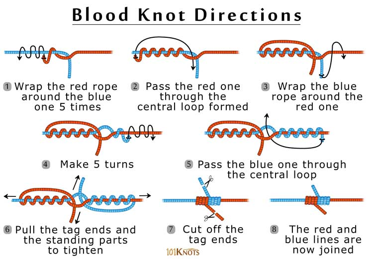

This little gem of a knot is used on fishing line to secure two lines together (mends a broken line or attaches leaders and tippets).
How to tie a blood knot:
You’ll start the blood knot by overlapping the two lines, and wrapping one free end around the other line five or six times. Pass the free end between the two lines. Wrap the other line the same number of times (five or six), and tuck the free end back between the two lines in the opposite direction of the other free end of the line. If using fishing line, spit on it to reduce friction damage.
